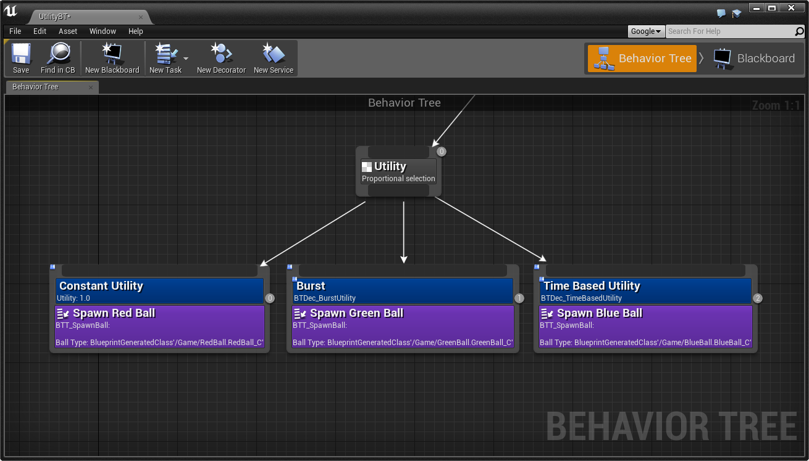

Behavior Tree Utility Plugin
| Name | Behavior Tree Utility Plugin |
| Category | AI |
| Author | Cameron Angus (kamrann) |
| Version | 1.0 |
| UE4 Build | 4.9+ |
Overview
This plugin extends the UE4 behavior tree with a new node, the 'Utility Selector'. Essentially, this works like the existing 'Selector' node but instead of prioritizing children left to right, it allows prioritization based on a utility value. By attaching special decorators to the child nodes, their utility value can be set as a constant, retrieved from the blackboard, or calculated dynamically in a blueprint. The selector can then be configured to either always choose the child with the highest utility value at the time, or to weight selection proportionally.
This gives more control over when an AI should execute which behavior, and makes it very easy to incorporate variety and randomness into behaviors.
A forum thread for the plugin is here .
Downloads
Get the plugin here . Just unzip into YourProject/Plugins, load up your project, and the new nodes should be available in the behavior tree editor automatically.
Source code is here . A simple example project using the plugin is also available here (4.10+ only).
Example BT
